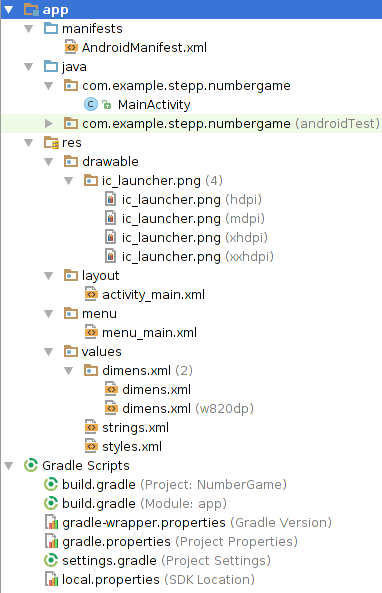

Redundant XML styling
- In large layouts, you'll have views with similar appearance.
- It is redundant to write the same attributes on every widget.
<TextView
android:id="@+id/text1"
android:layout_width="match_parent"
android:layout_height="wrap_content"
android:textColor="#00FF00"
android:typeface="monospace"
android:text="Hello, world!" />
<TextView
android:id="@+id/text2"
android:layout_width="match_parent"
android:layout_height="wrap_content"
android:textColor="#00FF00"
android:typeface="monospace"
android:text="Goodbye" />
Styles XML file

- res/ = resource files (many are XML)
- drawable/ = images
- layout/ = descriptions of GUI layout
- menu/ = overall app menu options
- values/ = constant values, arrays, styles
- styles.xml
- strings/ = localization data
- You can define commonly used styles in res/values/styles.xml and use them repeatedly in code.
Example styles.xml
- Declare styles with a
<style>tag.- Give each style a name attribute.
- Inside, use
<item>tags to declare style attribute values.
<!-- res/values/styles.xml -->
<?xml version="1.0" encoding="utf-8"?>
<resources>
<style name="CodeFont">
<item name="android:layout_width">match_parent</item>
<item name="android:layout_height">wrap_content</item>
<item name="android:textColor">#00FF00</item>
<item name="android:typeface">monospace</item>
</style>
</resources>
Fix redundant XML styling
<TextView
android:id="@+id/text1"
android:layout_width="match_parent"
android:layout_height="wrap_content"
android:textColor="#00FF00"
android:typeface="monospace"
style="@style/CodeFont"
android:text="Hello, world!" />
<TextView
android:id="@+id/text2"
android:layout_width="match_parent"
android:layout_height="wrap_content"
android:textColor="#00FF00"
android:typeface="monospace"
style="@style/CodeFont"
android:text="Goodbye" />
Style inheritance
- Give your style a parent attribute to use inheritance.
- It will copy all properties from the parent.
- You can add more properties and/or override existing ones.
- The following style inherits the monospace font, layout width/height, text color, etc. from
CodeFont- Alternate syntax: Name your style with prefix of parent's name, such as
CodeFont.Emphasized
- Alternate syntax: Name your style with prefix of parent's name, such as
<!-- res/values/styles.xml -->
<style name="EmphasizedCode" parent="@style/CodeFont">
<item name="android:textStyle">bold|italic</item>
</style>
Declaring a color
- If many of your styles use a color, you can declare that color as a
element and give it a name. - Refer to it in styles as
@color/name - Colors are hex strings #RRGGBB where R,G,B are 00-FF (0-255)
- Refer to it in styles as
<!-- res/values/styles.xml -->
<color name="my_orange">#dd7700</color>
<style name="CodeFont">...
<item name="android:textColor">@color/my_orange</item>
</style>
<style name="AnotherStyle">...
<item name="android:background">@color/my_orange</item>
</style>
All style properties (link)
- Each property's name starts with
android:, e.g.android:textSize - activityCloseEnterAnimation, activityCloseExitAnimation, activityOpenEnterAnimation, activityOpenExitAnimation, animateLayoutChanges, background, backgroundLeft, backgroundRight, backgroundSplit, borderBottom, borderLeft, borderRight, borderTop, bottomBright, bottomDark, bottomMedium, breakStrategy, button, buttonGravity, cacheColorHint, calendarViewMode, calendarViewShown, centerBright, centerDark, centerMedium, checkMark, childDivider, clickable, clickColor, collapseContentDescription, collapseIcon, completionHintView, completionThreshold, contentDescription, contentInsetStart, datePickerMode, dateTextAppearance, dialogLayout, disabledAlpha, displayOptions, divider, dividerPadding, dropDownHorizontalOffset, dropDownSelector, dropDownVerticalOffset, dropDownWidth, ellipsize, enabled, eventsInterceptionEnabled, fadeDuration, fadeOffset, fadingEdge, fadingEdgeLength, fastScrollStyle, focusable, focusableInTouchMode, focusedMonthDateColor, fontFamily, fragmentCloseEnterAnimation, fragmentCloseExitAnimation, fragmentFadeEnterAnimation, fragmentFadeExitAnimation, fragmentOpenEnterAnimation, fragmentOpenExitAnimation, fullBright, fullDark, gestureColor, gestureStrokeAngleThreshold, gestureStrokeLengthThreshold, gestureStrokeSquarenessThreshold, gestureStrokeWidth, gravity, groupIndicator, headerLayout, headerRemoveIconIfEmpty, height, homeLayout, horizontalProgressLayout, hyphenationFrequency, indeterminateBehavior, indeterminateDrawable, indeterminateDuration, indeterminateOnly, indeterminateProgressStyle, indicatorLeft, indicatorRight, internalLayout, isIndicator, itemColor, itemLayout, keyBackground, keyPreviewHeight, keyPreviewLayout, keyPreviewOffset, keyTextColor, keyTextSize, labelTextSize, launchTaskBehindSourceAnimation, launchTaskBehindTargetAnimation, layout, layout_height, layout_marginBottom, layout_marginEnd, layout_marginStart, layout_marginTop, layout_width, legacyLayout, listSelector, maxButtonHeight, maxDate, maxHeight, maxLines, maxWidth, minDate, minHeight, minWidth, mirrorForRtl, navigationButtonStyle, needsDefaultBackgrounds, negativeButtonText, orientation, padding, paddingBottom, paddingEnd, paddingStart, paddingTop, pointerIconArrow, pointerIconSpotAnchor, pointerIconSpotHover, pointerIconSpotTouch, popupAnimationStyle, popupBackground, popupLayout, popupPromptView, position, positiveButtonText, progressBarStyle, progressDrawable, progressLayout, quickContactWindowSize, resOutColor, ringtoneType, scaleType, scrollbars, scrollbarStyle, scrollHorizontally, selectable, selectedDateVerticalBar, selectedWeekBackgroundColor, shadowColor, shadowDx, shadowDy, shadowRadius, shouldDisableView, showDefault, showDividers, shownWeekCount, showSilent, showWeekNumber, singleLine, spacing, spinnerMode, src, subtitleTextAppearance, subtitleTextStyle, switchTextOff, switchTextOn, tabLayout, tabStripEnabled, tabStripLeft, tabStripRight, taskCloseEnterAnimation, taskCloseExitAnimation, taskOpenEnterAnimation, taskOpenExitAnimation, taskToBackEnterAnimation, taskToBackExitAnimation, taskToFrontEnterAnimation, taskToFrontExitAnimation, textAlignment, textAppearance, textColor, textColorHighlight, textColorHint, textColorLink, textCursorDrawable, textEditNoPasteWindowLayout, textEditPasteWindowLayout, textEditSideNoPasteWindowLayout, textEditSidePasteWindowLayout, textEditSuggestionItemLayout, textOff, textOn, textSelectHandle, textSelectHandleLeft, textSelectHandleRight, textSize, textStyle, textUnderlineColor, textUnderlineThickness, thumb, thumbDrawable, thumbMinHeight, thumbMinWidth, thumbOffset, timePickerMode, titleMargins, titleTextAppearance, titleTextStyle, topBright, topDark, touchscreenBlocksFocus, trackDrawable, uncertainGestureColor, unfocusedMonthDateColor, unselectedAlpha, verticalCorrection, wallpaperCloseEnterAnimation, wallpaperCloseExitAnimation, wallpaperIntraCloseEnterAnimation, wallpaperIntraCloseExitAnimation, wallpaperIntraOpenEnterAnimation, wallpaperIntraOpenExitAnimation, wallpaperOpenEnterAnimation, wallpaperOpenExitAnimation, weekDayTextAppearance, weekNumberColor, weekSeparatorLineColor, widgetLayout, windowEnterAnimation, windowExitAnimation, windowHideAnimation, windowShowAnimation
Themes
theme: A collection of many styles.
- each app can set a theme to use
- Android defines several default themes that you can choose from
- you can define your own themes if you like


Setting app theme
To set your app's theme, declare it in AndroidManifest.xml.
<!-- AndroidManifest.xml -->
<application android:theme="@android:style/Theme.Material">
...
- You can also specify a different theme for each activity:
<activity android:name=".MainActivity"
android:theme="@android:style/Theme.Translucent"> ...
Defining your own theme
- Declare your new theme as a style that inherits from the Theme type, or from an existing theme that you want to tweak.
- It will copy all properties from the parent theme.
- The following theme is the same as Light, but with a different window background color:
<!-- res/values/styles.xml -->
<style name="MyTheme" parent="@android:style/Theme.Light">
<item name="android:windowBackground">#b0b0ff</item>
</style>
All theme properties (link)
- Each property's name starts with
android:, e.g.android:textSize - absListViewStyle, accessibilityFocusedDrawable, actionBarDivider, actionBarItemBackground, actionBarPopupTheme, actionBarSize, actionBarSplitStyle, actionBarStyle, actionBarTabBarStyle, actionBarTabStyle, actionBarTabTextStyle, actionBarTheme, actionBarWidgetTheme, actionButtonStyle, actionDropDownStyle, actionMenuTextAppearance, actionMenuTextColor, actionModeBackground, actionModeCloseButtonStyle, actionModeCloseDrawable, actionModeCopyDrawable, actionModeCutDrawable, actionModeFindDrawable, actionModePasteDrawable, actionModePopupWindowStyle, actionModeSelectAllDrawable, actionModeShareDrawable, actionModeSplitBackground, actionModeStyle, actionModeWebSearchDrawable, actionOverflowButtonStyle, actionOverflowMenuStyle, activatedBackgroundIndicator, activityChooserViewStyle, alertDialogCenterButtons, alertDialogIcon, alertDialogStyle, alertDialogTheme, ambientShadowAlpha, autoCompleteTextViewStyle, background, backgroundDimAmount, backgroundDimEnabled, borderlessButtonStyle, buttonBarButtonStyle, buttonBarNegativeButtonStyle, buttonBarNeutralButtonStyle, buttonBarPositiveButtonStyle, buttonBarStyle, buttonStyle, buttonStyleInset, buttonStyleSmall, buttonStyleToggle, calendarViewStyle, candidatesTextStyleSpans, checkBoxPreferenceStyle, checkboxStyle, checkedTextViewStyle, colorActivatedHighlight, colorBackground, colorBackgroundCacheHint, colorBackgroundFloating, colorButtonNormal, colorControlActivated, colorControlHighlight, colorControlNormal, colorEdgeEffect, colorFocusedHighlight, colorForeground, colorForegroundInverse, colorLongPressedHighlight, colorMultiSelectHighlight, colorPressedHighlight, colorPrimary, colorPrimaryDark, datePickerDialogTheme, datePickerStyle, detailsElementBackground, dialogCustomTitleDecorLayout, dialogPreferenceStyle, dialogPreferredPadding, dialogTheme, dialogTitleDecorLayout, dialogTitleIconsDecorLayout, disabledAlpha, dividerHorizontal, dividerVertical, dropDownHintAppearance, dropDownItemStyle, dropdownListPreferredItemHeight, dropDownListViewStyle, dropDownSpinnerStyle, editTextBackground, editTextColor, editTextPreferenceStyle, editTextStyle, errorMessageAboveBackground, errorMessageBackground, expandableListPreferredChildIndicatorLeft, expandableListPreferredChildIndicatorRight, expandableListPreferredChildPaddingLeft, expandableListPreferredItemIndicatorLeft, expandableListPreferredItemIndicatorRight, expandableListPreferredItemPaddingLeft, expandableListViewStyle, expandableListViewWhiteStyle, fastScrollOverlayPosition, fastScrollPreviewBackgroundLeft, fastScrollPreviewBackgroundRight, fastScrollStyle, fastScrollTextColor, fastScrollThumbDrawable, fastScrollTrackDrawable, findOnPageNextDrawable, findOnPagePreviousDrawable, fingerprintAuthDrawable, floatingToolbarCloseDrawable, floatingToolbarForegroundColor, floatingToolbarItemBackgroundBorderlessDrawable, floatingToolbarItemBackgroundDrawable, floatingToolbarOpenDrawable, floatingToolbarPopupBackgroundDrawable, fragmentBreadCrumbsStyle, galleryItemBackground, galleryStyle, gestureOverlayViewStyle, gridViewStyle, homeAsUpIndicator, horizontalDivider, horizontalScrollViewStyle, imageButtonStyle, imageWellStyle, imeExtractEnterAnimation, imeExtractExitAnimation, imeFullscreenBackground, isLightTheme, itemBackground, itemIconDisabledAlpha, itemTextAppearance, keyboardViewStyle, lightRadius, lightY, lightZ, listChoiceBackgroundIndicator, listChoiceIndicatorMultiple, listChoiceIndicatorSingle, listDivider, listDividerAlertDialog, listPopupWindowStyle, listPreferredItemHeight, listPreferredItemHeightLarge, listPreferredItemHeightSmall, listPreferredItemPaddingEnd, listPreferredItemPaddingLeft, listPreferredItemPaddingRight, listPreferredItemPaddingStart, listSeparatorTextViewStyle, listViewStyle, listViewWhiteStyle, mediaRouteButtonStyle, moreIcon, navigationBarColor, numberPickerStyle, panelBackground, panelColorBackground, panelColorForeground, panelFullBackground, panelMenuIsCompact, panelMenuListWidth, panelTextAppearance, pointerStyle, popupMenuStyle, popupWindowStyle, preferenceActivityStyle, preferenceCategoryStyle, preferenceFragmentListStyle, preferenceFragmentPaddingSide, preferenceFragmentStyle, preferenceFrameLayoutStyle, preferenceHeaderPanelStyle, preferenceInformationStyle, preferenceLayoutChild, preferenceListStyle, preferencePanelStyle, preferenceScreenStyle, preferenceStyle, presentationTheme, progressBarStyle, progressBarStyleHorizontal, progressBarStyleInverse, progressBarStyleLarge, progressBarStyleLargeInverse, progressBarStyleSmall, progressBarStyleSmallInverse, progressBarStyleSmallTitle, quickContactBadgeOverlay, quickContactBadgeStyleSmallWindowLarge, quickContactBadgeStyleSmallWindowMedium, quickContactBadgeStyleSmallWindowSmall, quickContactBadgeStyleWindowLarge, quickContactBadgeStyleWindowMedium, quickContactBadgeStyleWindowSmall, radioButtonStyle, ratingBarStyle, ratingBarStyleIndicator, ratingBarStyleSmall, ringtonePreferenceStyle, scrollbarDefaultDelayBeforeFade, scrollbarFadeDuration, scrollbarSize, scrollbarThumbHorizontal, scrollbarThumbVertical, scrollbarTrackHorizontal, scrollbarTrackVertical, scrollViewStyle, searchDialogTheme, searchResultListItemHeight, searchViewStyle, searchWidgetCorpusItemBackground, seekBarDialogPreferenceStyle, seekBarPreferenceStyle, seekBarStyle, segmentedButtonStyle, selectableItemBackground, selectableItemBackgroundBorderless, spinnerDropDownItemStyle, spinnerItemStyle, spinnerStyle, spotShadowAlpha, starStyle, statusBarColor, switchPreferenceStyle, switchStyle, tabWidgetStyle, textAppearance, textAppearanceAutoCorrectionSuggestion, textAppearanceButton, textAppearanceEasyCorrectSuggestion, textAppearanceInverse, textAppearanceLarge, textAppearanceLargeInverse, textAppearanceLargePopupMenu, textAppearanceListItem, textAppearanceListItemSecondary, textAppearanceListItemSmall, textAppearanceMedium, textAppearanceMediumInverse, textAppearanceMisspelledSuggestion, textAppearanceSearchResultSubtitle, textAppearanceSearchResultTitle, textAppearanceSmall, textAppearanceSmallInverse, textAppearanceSmallPopupMenu, textCheckMark, textCheckMarkInverse, textColor, textColorAlertDialogListItem, textColorHighlight, textColorHighlightInverse, textColorHint, textColorHintInverse, textColorLink, textColorLinkInverse, textColorPrimary, textColorPrimaryActivated, textColorPrimaryDisableOnly, textColorPrimaryInverse, textColorPrimaryInverseDisableOnly, textColorPrimaryInverseNoDisable, textColorPrimaryNoDisable, textColorSearchUrl, textColorSecondary, textColorSecondaryActivated, textColorSecondaryInverse, textColorSecondaryInverseNoDisable, textColorSecondaryNoDisable, textColorTertiary, textColorTertiaryInverse, textCursorDrawable, textEditNoPasteWindowLayout, textEditPasteWindowLayout, textEditSideNoPasteWindowLayout, textEditSidePasteWindowLayout, textEditSuggestionItemLayout, textSelectHandle, textSelectHandleLeft, textSelectHandleRight, textSelectHandleWindowStyle, textSuggestionsWindowStyle, textViewStyle, timePickerDialogTheme, timePickerStyle, toastFrameBackground, toolbarStyle, verticalDivider, webTextViewStyle, webViewStyle, windowActionBar, windowActionBarFullscreenDecorLayout, windowActionModeOverlay, windowActivityTransitions, windowAnimationStyle, windowBackground, windowBackgroundFallback, windowClipToOutline, windowCloseOnTouchOutside, windowContentOverlay, windowContentTransitions, windowDisablePreview, windowDrawsSystemBarBackgrounds, windowFixedHeightMajor, windowFixedHeightMinor, windowFixedWidthMajor, windowFixedWidthMinor, windowFrame, windowFullscreen, windowIsFloating, windowIsTranslucent, windowNoDisplay, windowNoTitle, windowOverscan, windowShowWallpaper, windowSoftInputMode, windowTitleBackgroundStyle, windowTitleSize, windowTitleStyle, windowTranslucentNavigation, windowTranslucentStatus, yesNoPreferenceStyle